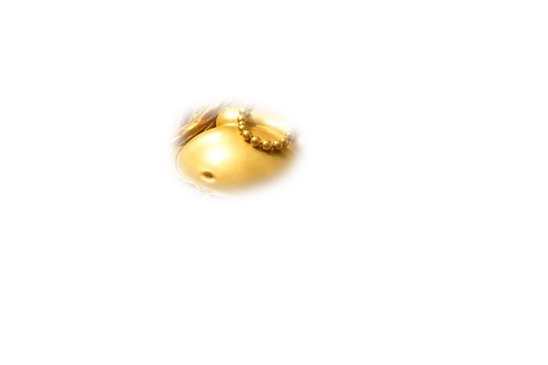
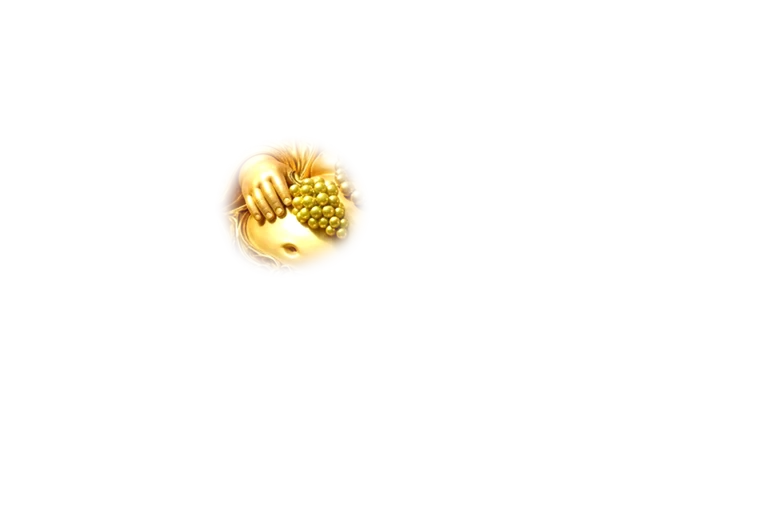
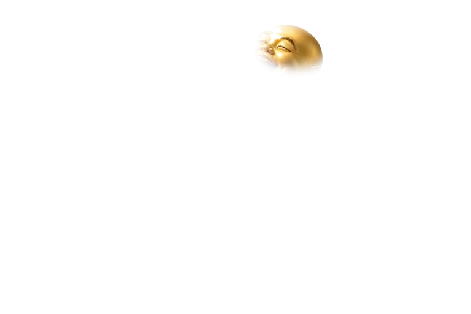
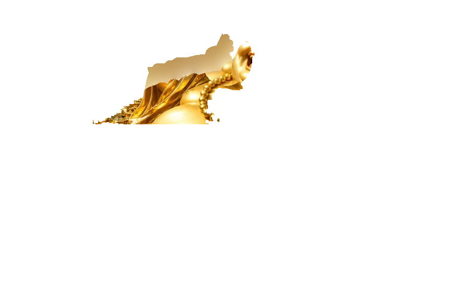
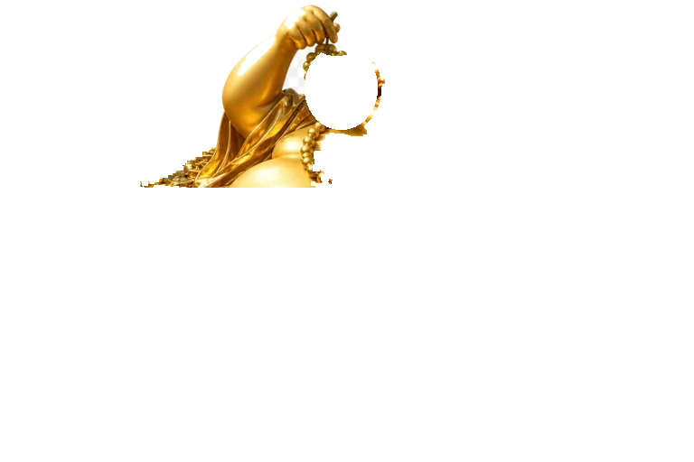
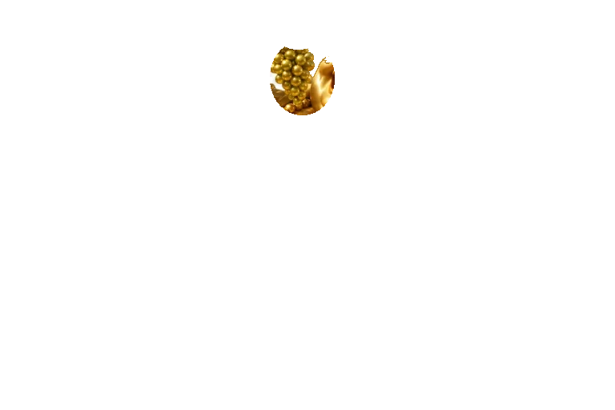

Golden Buddha — layered scene with the accepted hidden reconstruction
(served files, this directory's img/cosmetics/)
Rest must read as one continuous artwork with no
seam at the shoulder; reach (−15°, anchor stepped aside) must show the painted chest, drape and
necklace behind the arm — no flat patch, no tear; grape swing must not open holes in the hand.
LIVE — the real 24s cycle at 2× (not frozen)






REST — 172px (the card's drawn size)
REST — 344px (2×, for the seam check)
REACH −15°, anchor stepped aside (keyframe 62.5%) — 344px
GRAPE SWING +5° (keyframe 34%) — 344px